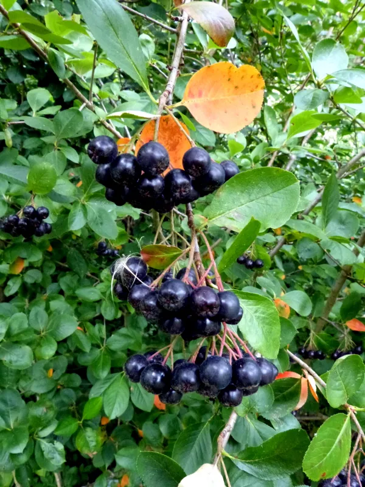

Black chokeberry
Black chokeberry is a wild fruit you can forage from August to September in Ontario, Quebec and Atlantic Canada. Shrub of wet woods and bogs with glossy leaves and clusters of black, very astringent berries.

When is black chokeberry in season in Canada?
Black chokeberry is usually in season August to September. Timing shifts with weather, latitude and altitude.
Where does black chokeberry grow in Canada?
Black chokeberry grows in New Brunswick, Newfoundland and Labrador, Nova Scotia, Ontario, Prince Edward Island, Quebec. Regions: Ontario, Quebec, Atlantic Canada.
How do you recognise black chokeberry?
Shrub of wet woods and bogs with glossy leaves and clusters of black, very astringent berries.
How do you harvest black chokeberry?
Pick only fully ripe fruit that comes away easily, into a shallow container so it doesn't crush. Leave plenty on the plant for birds and wildlife.
How do you eat black chokeberry?
Juice, jam, baking with sugar.
How do you store black chokeberry?
Freeze or dry.
What is black chokeberry good for?
Vitamin C.